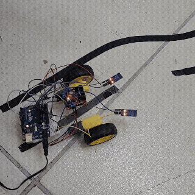

/********************************************************/
/* Aula 33 - Robô Seguidor de Linha */
/* Programação: Abaixo um exemplo de código que */
/* controlará o robô para seguir uma linha. É utilizado */
/* dois módulos sensores de obstáculo IR para detectar */
/* a linha e a ponte H L298n para fazer o controle dos */
/* motores DC. */
/********************************************************/
/*=====ATENÇÃO!======== ATENÇÃO! =========ATENÇÃO!======*/
/* Antes de compilar/carregar o código, você deverá */
/* selecionar qual a cor da linha que o robô deverá */
/* seguir, para isto, descomente (removendo o //) de */
/* uma das duas linhas abaixo. */
//String CorLinha = "preta"; /* Linha PRETA */
//String CorLinha = "branca"; /* Linha BRANCA */
/*=====ATENÇÃO!======== ATENÇÃO! =========ATENÇÃO!======*/
/* Definições dos pinos IN1 a IN4 da ponte H. */
/* Para controlar a velocidade dos motores, esses pinos */
/* deverão ser conectados em portas com o recurso PWM. */
#define IN1 10 // Porta PWM ~10
#define IN2 9 // Porta PWM ~9
#define IN3 6 // Porta PWM ~6
#define IN4 5 // Porta PWM ~5
#define Velocidade 180
/* Define os pinos 2 e 3 para os sensores IR */
#define Pino_Sensor_Direita 2
#define Pino_Sensor_Esquerda 3
/* Variáveis para armazenar os dados dos sensores. */
int Sensor_Direita, Sensor_Esquerda;
/* Variáveis auxiliares. */
int detectou, naodetectou;
/* Criando as funções de controle dos motores. */
/* Move para frente. */
void Frente() {
/* Motor A */
analogWrite(IN1, Velocidade);
analogWrite(IN2, 0);
/* Motor B */
analogWrite(IN3, Velocidade);
analogWrite(IN4, 0);
}
/* Giro no sentido horário. */
void GiroHorario() {
/* Motor A */
analogWrite(IN1, Velocidade);
analogWrite(IN2, 0);
/* Motor B */
analogWrite(IN3, 0);
analogWrite(IN4, Velocidade);
}
/* Giro no sentido anti-horário. */
void GiroAntiHorario() {
/* Motor A */
analogWrite(IN1, 0);
analogWrite(IN2, Velocidade);
/* Motor B */
analogWrite(IN3, Velocidade);
analogWrite(IN4, 0);
}
/* Para o chassi. */
void Pare() {
/* Motor A */
analogWrite(IN1, 0);
analogWrite(IN2, 0);
/* Motor B */
analogWrite(IN3, 0);
analogWrite(IN4, 0);
}
void setup() {
/* Define o modo de detecção da linha de acordo com a */
/* cor escolhida. */
if (CorLinha == "preta") {
detectou = 1;
naodetectou = 0;
} else {
detectou = 0;
naodetectou = 1;
}
Serial.begin(9600);
pinMode(Pino_Sensor_Direita, INPUT);
pinMode(Pino_Sensor_Esquerda, INPUT);
/* Inicia com os motores parados. */
Pare();
}
void loop() {
/* Sensores realizam a leitura */
Sensor_Direita = digitalRead(Pino_Sensor_Direita);
Sensor_Esquerda = digitalRead(Pino_Sensor_Esquerda);
/* Nenhum sensor detectou a linha */
if (Sensor_Esquerda == naodetectou && Sensor_Direita == naodetectou) {
Frente();
Serial.println("Nenhum sensor detectou a linha.");
}
/* Sensor da direita detectou a linha */
if (Sensor_Esquerda == naodetectou && Sensor_Direita == detectou) {
GiroHorario();
/* Pequena pausa para garantir a correção da trajetória. */
delay(50);
Serial.println("Somente o sensor da Direita detectou a linha.");
}
/* Sensor da esquerda detectou a linha */
if (Sensor_Esquerda == detectou && Sensor_Direita == naodetectou) {
GiroAntiHorario();
/* Pequena pausa para garantir a correção da trajetória. */
delay(50);
Serial.println("Somente o sensor da Esquerda detectou a linha.");
}
/* Os dois sensores detectaram a linha */
if (Sensor_Esquerda == detectou && Sensor_Direita == detectou) {
Pare();
Serial.println("Ambos sensores detectaram a linha.");
}
}